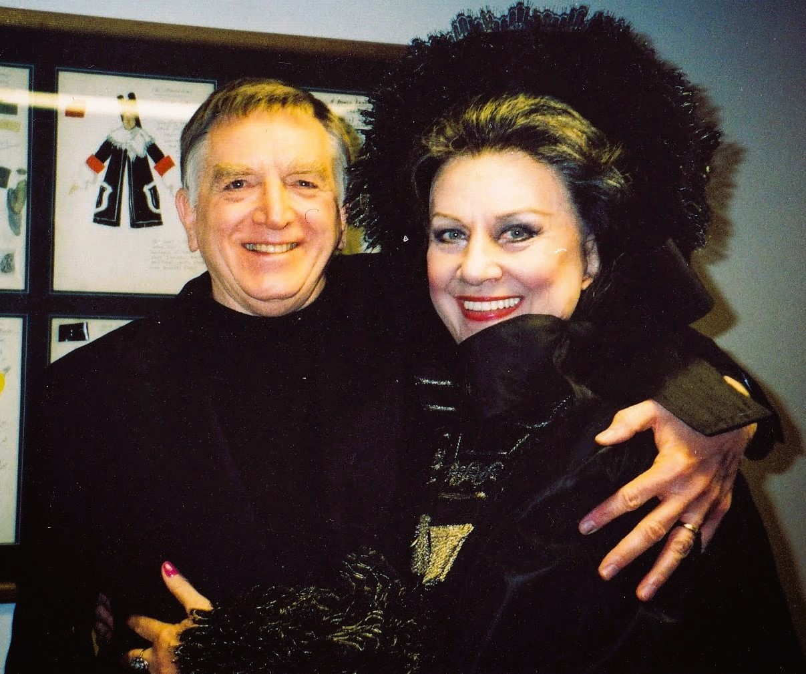
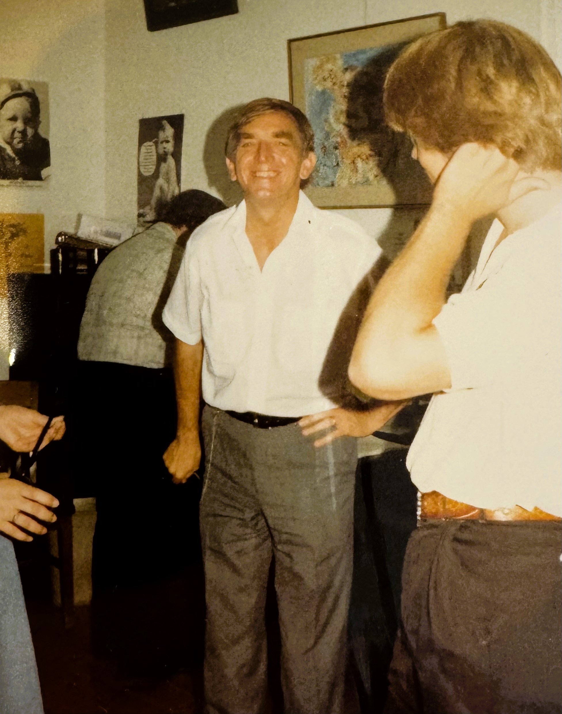

Excerpts from 7 online interviews with Susan Ashbaker, Daniel Gundlach, Rebecca Hays, Jeffrey Peterson, Mary Pinto, Margaret Simmons, and Yelena Kurdina in 2024.
Interview with John Wustman
excerpt of an online interview with Chanda VanderHart: 19 September 2024.
John Wustman: 70th Birthday Celebration
Scans of pianist and pedagogue John Wustman's 70th birthday celebration concert program and nine letters from Anna Moffo, Birgit Nilsson, Carlo Bergonzi, Elena Obraztsova, Elisabeth Schwarzkopf, Irina Arkhipova, Régine Crespin, Renata Scotto and Roberta Peters.
Yelena Kurdina Photo Collection
11 photos of John Wustman, collected by Yelena Kurdina.

Countermelody: Wustman Tribute
Episode 229 of Wustman student Daniel Gundlach's podcast. Includes rich audio examples and Gundlach's own reflections on Wustman as a pedagogue, musician, and person.
Letter to Jean Barr
Dated 7 February 1982, Wustman's response to a request for written greetings for Gwendolyn Koldofsky's 75th birthday.
John Wustman: Candid by Susan Ashbaker
Snapshot taken at Eureka summer camp in the 1980s.

Ode to John Wustman
Poem by Susan Ashbaker, read at Wustman's 70th birthday party, 2000.